❤️
31 октября · только для тебя
Малыш, с днём рождения!
Наши любимые моменты. И немного Кости рядом, даже когда он далеко.
Нажми в окне «▶ Услышать Костю» и разреши микрофон. Костя начнёт поздравление сам, а потом с ним можно поговорить по-русски.
Моменты нашей жизни
Малыш, сколько же прекрасного было. И сколько ещё впереди!
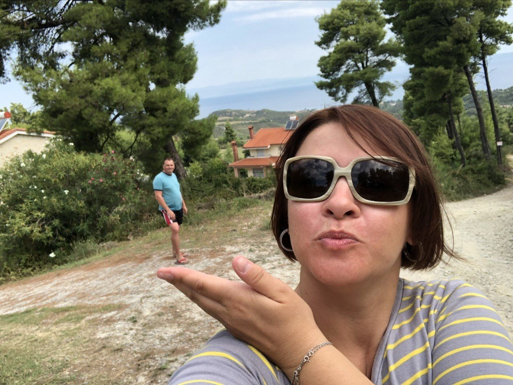
ГрецияТы держишь меня на ладони. И это почти правда!
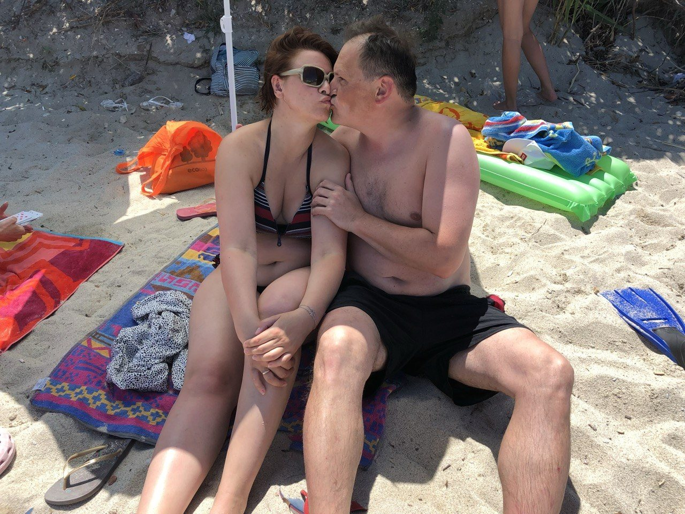
Наша ГрецияОдно из самых счастливых наших путешествий.
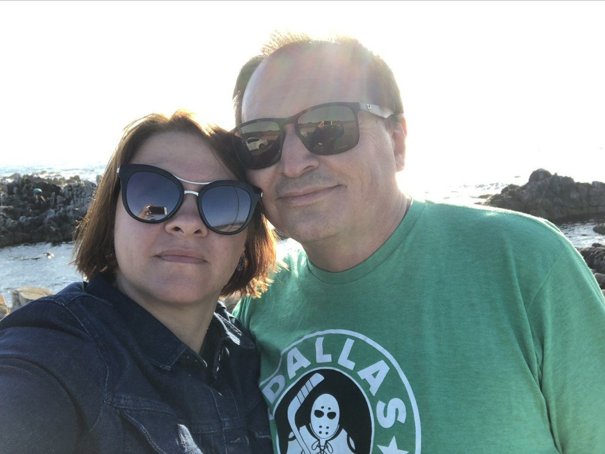
КалифорнияВ гостях у моей кузины.
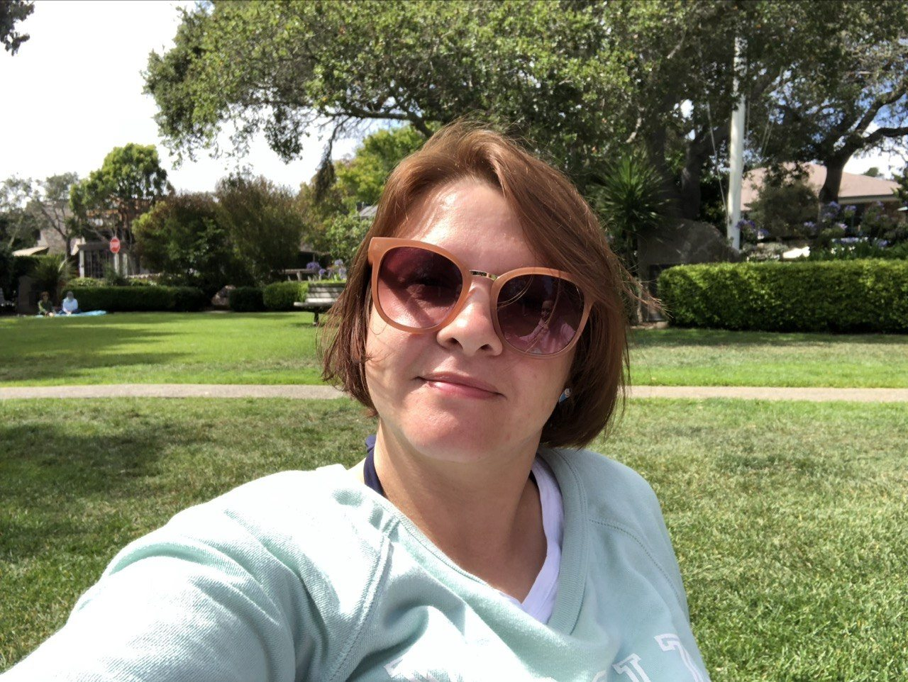
ТыПросто любимая фотография.
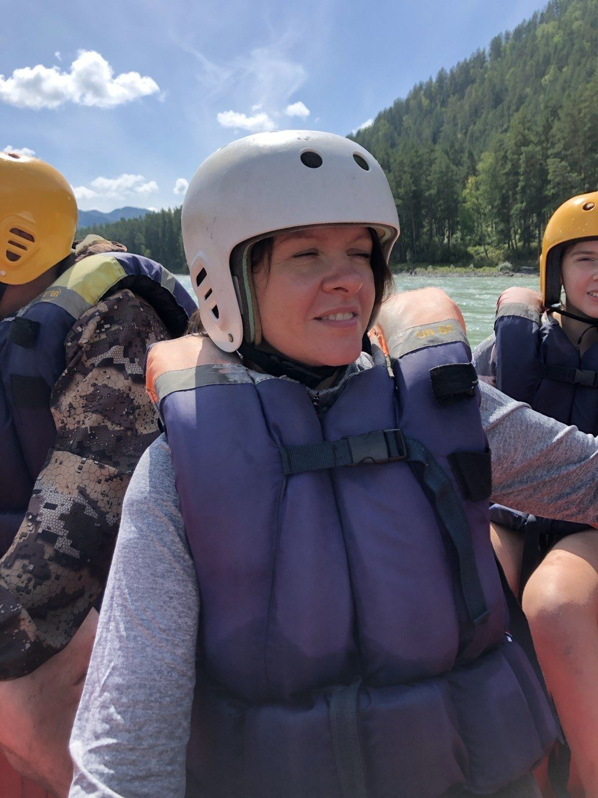
АлтайТвоя энергия и наши приключения.
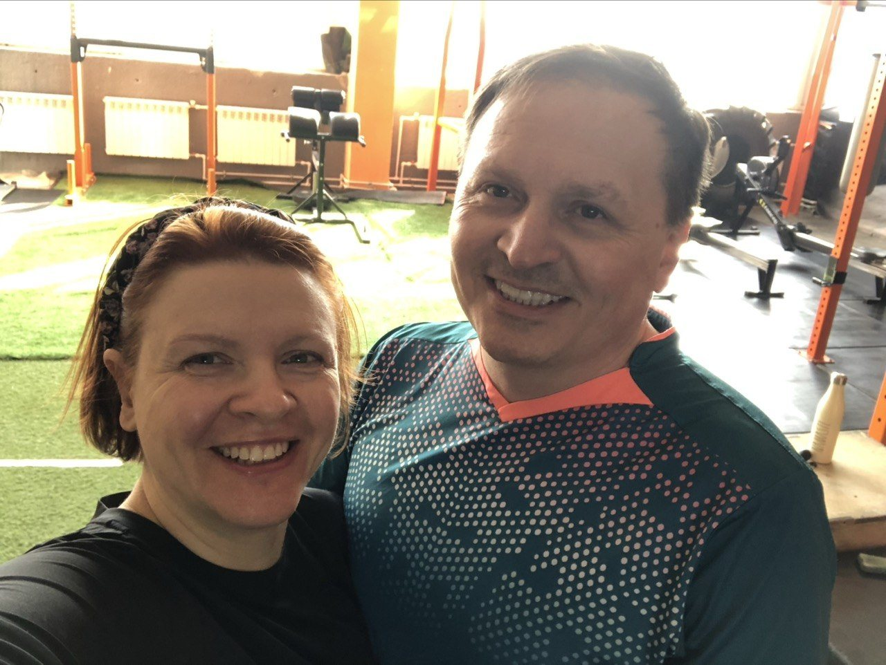
ВместеКажется, это Омск — и мы снова рядом.
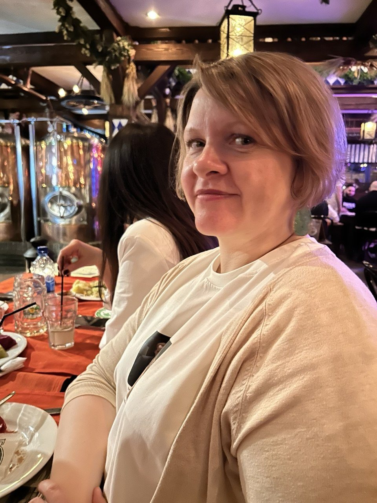
ПетербургТвоя улыбка, которую я так люблю.
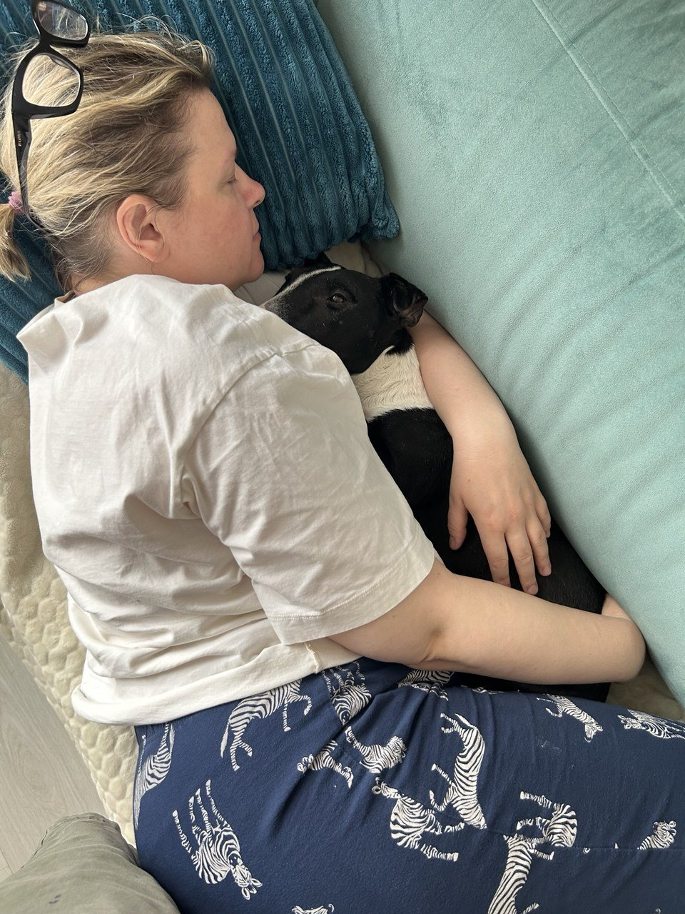
КорнейНаш любимый временный гость.
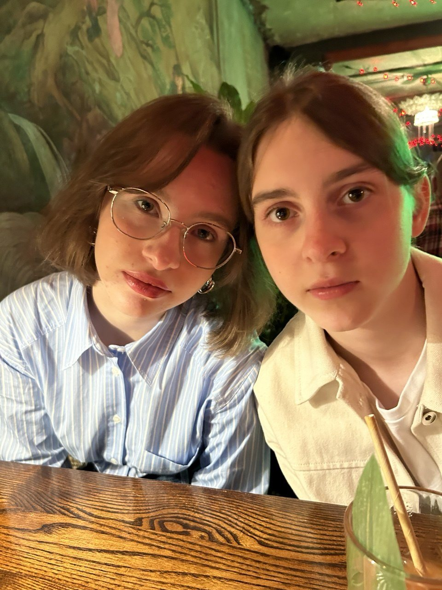
Мила и НикаСамый дорогой подарок — друг другу.
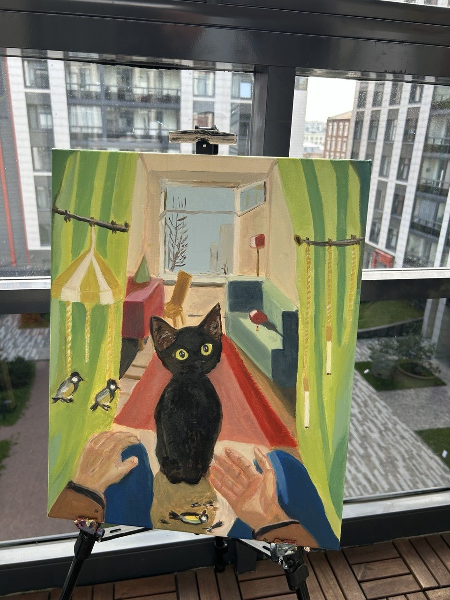
ШадяЯ нарисовал её специально для тебя.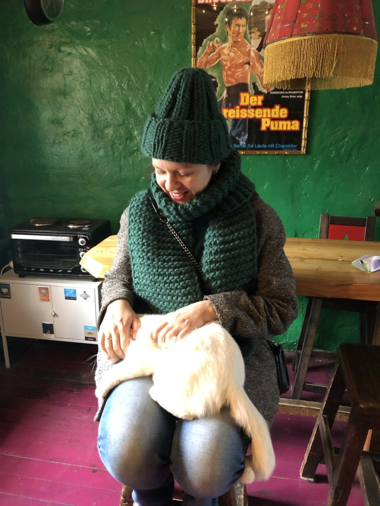
У Дамира в ОмскеТы в этой смешной шапке, с котиком — в гостях у нашего друга художника Дамира Муратова.
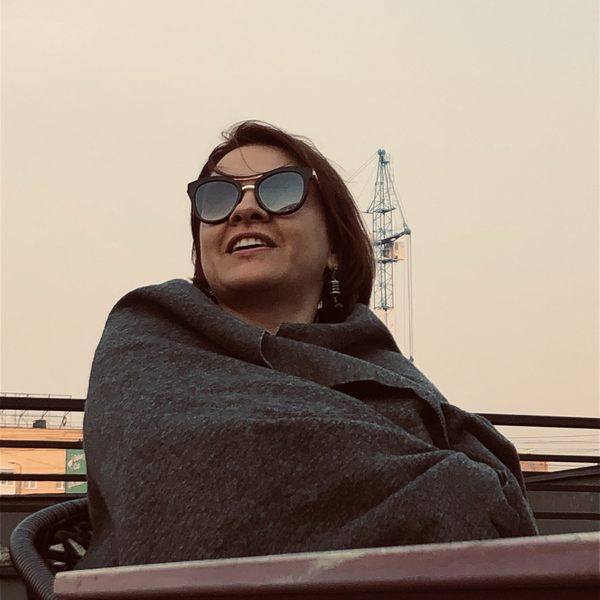
Омский вечерПрохладно, ты кутаешься в плед и смотришь на вечернее небо. Какой прекрасный момент!Люблю тебя. Твой Костя ❤️
Личная семейная страница. Пожалуйста, не распространяйте ссылку.